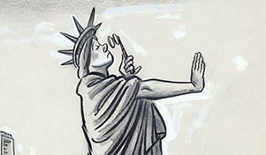
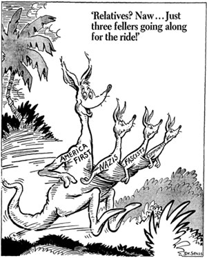

This is an archived copy of History Matters, provided by the Roy Rosenzweig Center for History and New Media. To explore this content in a new interface, visit Who Built America?.

Herblock’s History: Political Cartoons from the Crash to the Millennium
http://www.loc.gov/rr/print/swann/herblock/
Created and maintained by the Library of Congress.
Reviewed May 21, 2013.
Dr. Seuss Went to War: A Catalog of Political Cartoons
http://libraries.ucsd.edu/speccoll/dswenttowar/
Created and maintained by the Mandeville Special Collections Library of the University of California, San Diego.
Reviewed May 21, 2013.
The two Web sites Herblock’s History: Political Cartoons from the Crash to the Millennium and Dr. Seuss Went to War: A Catalog of Political Cartoons are important resources for readers interested in the distinctive role that editorial cartooning plays in chronicling history as it happens. Editorial cartoons may well be the most extreme form of expression in traditional journalism. Cartoonists give us critical, often-brutal interpretations of the day’s issues and events, and, in doing so, help determine the limits of expression in a country that prides itself on its tradition of free expression.

In his introduction to Herblock’s History, James H. Billington, the Librarian of Congress, writes that no cartoonist or commentator in America has done more to educate and inform the public during the past seven decades than Herb Block, or Herblock as he signed his cartoons. Herblock drew thousands of cartoons between 1929 and 2001, most appearing on the editorial page of the influential Washington Post. He won a record four Pulitzer Prizes in editorial cartooning, coined the word McCarthyism, and infuriated countless politicians. In 1954 Herblock drew a stubbly faced Richard M. Nixon, who was then the U.S. vice president, climbing out of the sewer. When Nixon decided to run for president, he reportedly said, I have to erase the Herblock image.
Herblock’s History was a gift to the Library of Congress of one hundred drawings from the cartoonist, who died in 2001, just short of his ninety-second birthday. Herblock’s career began in 1929 and continued throughout the twentieth century. The site provides compelling snapshots of American politics, reminding us that politicians come and go but political hypocrisy and hubris are always present. It includes the introductory essay by Billington; a biographical essay by Harry L. Katz, the head curator of the Library of Congress’s Prints and Photographs Division; and an essay by Herblock, which, unfortunately, reveals little more than his modesty. The site would be improved by either including an interview with Herblock, in print, audio, or video, or a critical examination of his work from someone who, like the cartoonist himself, understands the simple potency of editorial cartoons and can explain why they are so valuable to both journalism and democracy.
Is Billington correct when he says no cartoonist or commentator in America has done more to educate and inform the public during the past seven decades than Herb Block? Such a question invites skepticism and even ridicule. Billington addresses neither how Herblock educated or informed the public nor the value of editorial cartooning. In his essay, Katz writes that no editorial cartoonist in American history, not even Thomas Nast, has made a more lasting impression on the nation than Herbert Block. I would argue that Garry Trudeau, who writes the Doonesbury strip, has made a more lasting impression.
But Herblock’s History makes a strong case for Herblock. Some of the drawings are dated, but dozens of otherson subjects such as gun control, censorship, flag burning, racism, militarism, poverty, and political corruptionare as relevant today as when they were drawn decades ago, demonstrating how cartoons can be used to connect us to the past. The site illustrates how editorial cartoons chronicle history and how Herblock, long before it was fashionable, exposed demagogues such as Joseph McCarthy and Nixon as dirty and sinister. By reducing Senator McCarthy and the vast right-wing conspiracy to a single word, Herblock turned McCarthyism into a metaphor for the abuses of the red scare. Nixon could shave himself raw but he could not erase the Herblock image.
Dr. Seuss, or Theodore Geisel, is America’s most beloved children’s book author. But before The Cat in the Hat (1957), Green Eggs and Ham (1960), and How the Grinch Stole Christmas! (1957), he was a political cartoonist for the liberal New York City newspaper PM from 1941 to 1943, the first two years of U.S. involvement in World War II. The Web site Dr. Seuss Went to War provides glimpses into the drawing style that would define the artist as a children’s book author. One finds the odd-looking characters, beasts, and birds in his war cartoons, which have a decidedly political slant, in contrast to the whimsy of his later work. One is unlikely to find Nazi swastikas in any of the Dr. Seuss books; but Dr. Seuss, the political cartoonist, included them regularly in his war drawings.

All four hundred cartoons that Seuss drew for PM were scanned from Mandeville Special Collections Library at the University of California, San Diego, which possesses the original cartoons. The images on the site are organized by the month and year that they appeared and are further categorized by subjects: people, places, issues, and battles. Each subject includes numerous subtopics, making the site more difficult to access than it could have been. The site also includes many of Seuss’s war bond cartoons, which are predictably patriotic and even nationalistic, resorting to ethnic stereotyping, a commonand regrettablepractice among cartoonists during war. The accompanying essay by the historian Richard H. Minear, the author of the book Dr. Seuss Goes to War (1999), provides limited value, failing to put the Seuss editorial cartoons in the context of either the war or the artist’s later work.
Dr. Seuss Went to War is impressive. While Seuss’s career as an editorial cartoonist was relatively brief, his work was carefully drawn and forcefully presented. He was an unapologetic supporter of President Franklin D. Roosevelt’s New Deal and the president’s international and domestic policies, including the internment of Japanese Americans. Seuss took no prisoners in either his attacks on German, Italian or Japanese aggression, or his attacks on fdr's critics, including Charles Lindbergh and the America First organization, and conservative newspapers, who Seuss accused of undermining the war effort.
Seuss’s criticism, like Herblock’s, of political extremism is commendable. He confronted racial bigotry and anticommunist hysteria with brutal honesty. After World War II Herblock remained an editorial cartoonist and found his greatest success in the 1950s and 1960s, becoming one of the country’s most important editorial cartoonists. Seuss also found his greatest success as an artist in the 1950s and 1960s as one of the country’s most important children’s books authors.
Chris Lamb
Indiana UniversityPurdue University Indianapolis
Indianapolis, Indiana